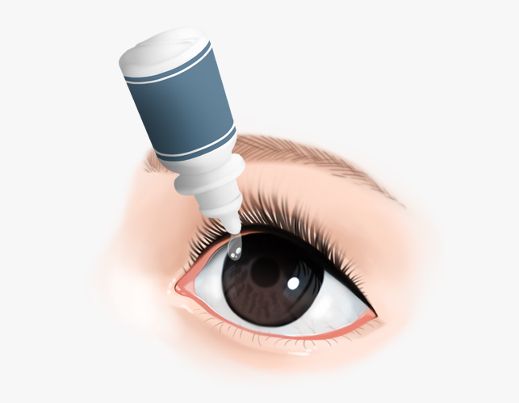
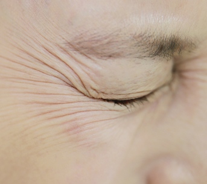
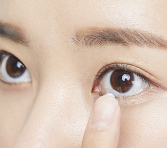
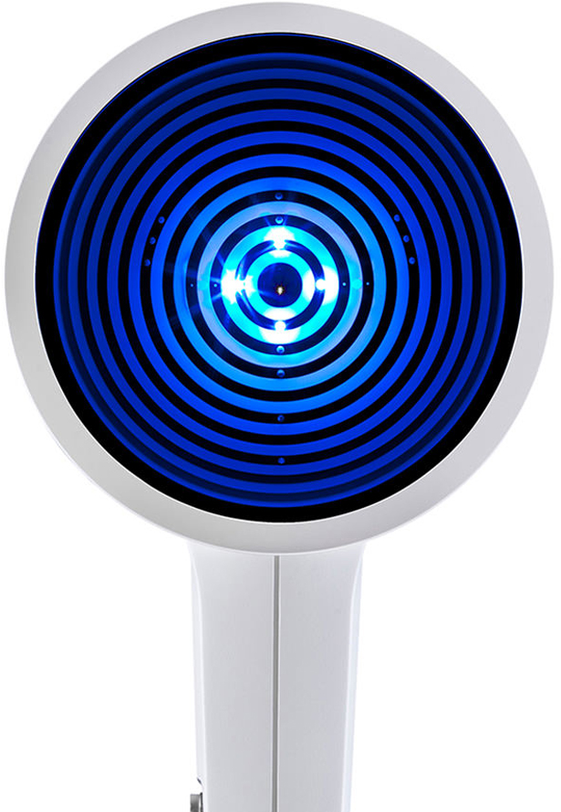
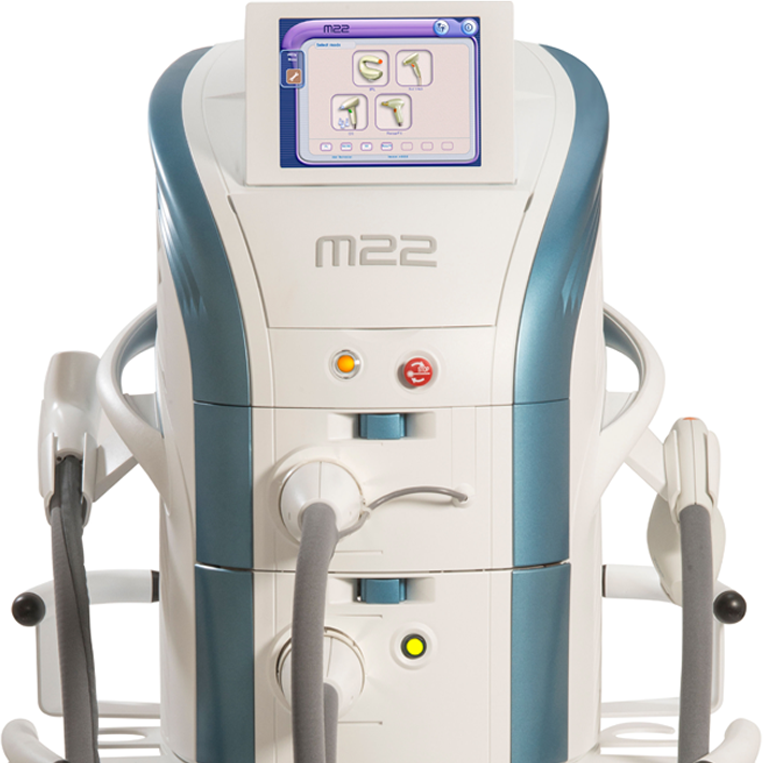

안구건조증
증상을 분석하고 정확한
원인 진단을 통해 치료합니다.
원인 진단을 통해 치료합니다.
안구건조증이란?
방치하면 위험한 안구건조증 적절한 치료가
중요합니다.

현대인의 눈 건강을
위협하고 있는 안과질환
위협하고 있는 안과질환
안구건조증은 눈물이 부족하거나 눈물 구성성분의 균형이 깨져서
눈물이 지나치게 증발하여 안구 표면이 손상되어 이물감, 건조함,
시린 증상이 나타나는 질환입니다. 안구건조증이 증상이 심하면 각막에 상처와 혼탁이 발생할 수 있기 적절한 치료와 관리가
이뤄져야 합니다.
눈물이 지나치게 증발하여 안구 표면이 손상되어 이물감, 건조함,
시린 증상이 나타나는 질환입니다. 안구건조증이 증상이 심하면 각막에 상처와 혼탁이 발생할 수 있기 적절한 치료와 관리가
이뤄져야 합니다.
안구건조증의 대표적 증상
안구건조증의 원인은
무엇일까?
장시간 스마트폰, PC등 사용

노화
스트레스, 수면부족
건조한 환경

잘못된 렌즈착용
특정약물 장기복용
안구건조증 가장 큰 원인
마이봄샘의 기능장애
우리 안구 표면에는 눈물막이 존재합니다. 눈물막은 점액층, 수분층,
기름층의 3가지 성분으로 이루어져 있는데
기름성분의 분비가 원활하지 못하거나 눈물 성분의 균형이 깨지는 경우
안구건조증이 발생하게 됩니다.
기름성분의 분비가 원활하지 못하거나 눈물 성분의 균형이 깨지는 경우
안구건조증이 발생하게 됩니다.
안구건조증의 치료가 필요한사람
안구건조증은 현대인의 90%가 갖고 있는 질환이지만 생활습관 또는
자연스러운 노화 현상으로 인해
발생하기도 합니다. 안구건조증이 심하다면 방치하기보단 근본적인 원인을 찾아 치료하고 꾸준히 관리하는 것이 중요합니다.
발생하기도 합니다. 안구건조증이 심하다면 방치하기보단 근본적인 원인을 찾아 치료하고 꾸준히 관리하는 것이 중요합니다.
콘택트렌즈 사용
장시간 IT기기 사용
장시간 공부
40대 이후
안구건조증
안산에스안과의 근본적인 치료방법
안산에스안과는 눈물층 분석장비를 통해 안구건조증의 정확한 원인을
파악 후 근본적인 원인이 되는
마이봄샘 기능이상을 치료하여 보다 효과적인 치료가 진행되고 있습니다.
마이봄샘 기능이상을 치료하여 보다 효과적인 치료가 진행되고 있습니다.

눈물층 분석장비
K5M
건성안 관련 지표를 종합적으로 정보를 확인할 수 있는
안구건조증 진단 특화 장비입니다.
안구건조증 진단 특화 장비입니다.
눈물 분비 검사
Tear Menincus Height
눈물막 안정성 검사
Non-Invasive Keratograph Break-up Time
눈물막 지질층 두께 검사
Lipid Layer Examination
눈물막 점도 검사
Tear film Dynamic Examination
결막 충혈정도 검사
R-scan
마이봄선 검사
Meibo-scan
아쿠아레이저 M22
안구건조증의 근본적인 원인이 되는
마이봄샘 기능을 회복시키고, 건강한
눈물막이 형성하도록 치료하며 피부 고민까지 동시에 해결하는 치료입니다.
눈물막이 형성하도록 치료하며 피부 고민까지 동시에 해결하는 치료입니다.
| 짧은 시술 시간 | 눈주변 피부개선 |
| 적은 통증 | FDA승인 안전성 |

BEFORE
AFTER